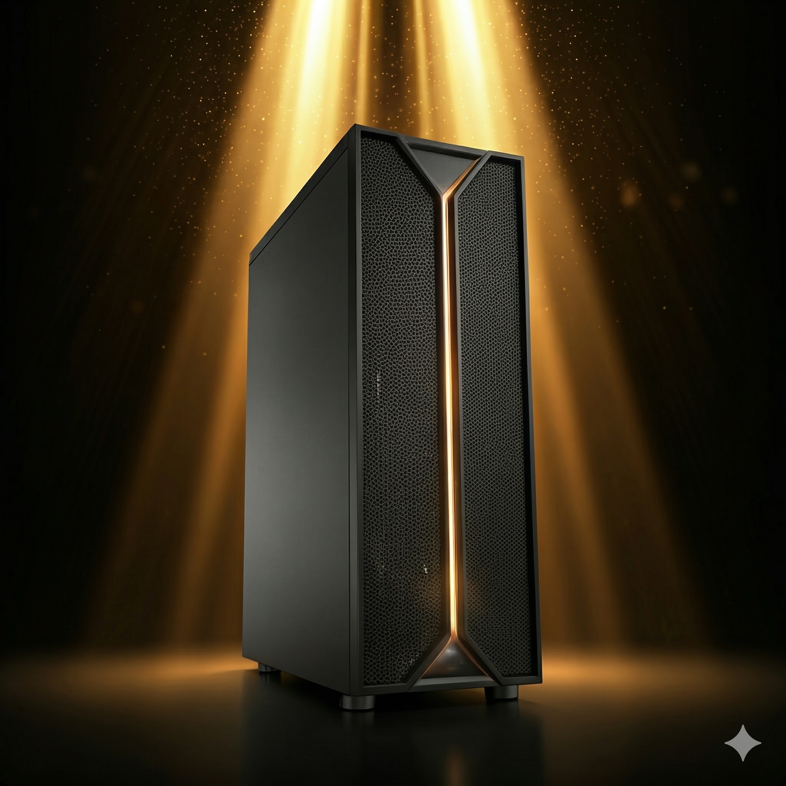

📞 +48 607 376 301 · ✉ biuro@urzednik.ai

System AI, który zna i rozumie dokumenty, procedury oraz wiedzę Twojej organizacji.
Działa lokalnie — bez wysyłania danych do chmury.
ON-PREMISE // BEZPIECZNE // POLSKIE
48h
WDROŻENIE
0%
DANE W CHMURZE
100%
ON-PREMISE
P1–P4
WIARYGODNOŚĆ
Jednocześnie pojawiają się konkretne ryzyka:
bezpieczeństwo danych i RODO (systemy AI w chmurze)
prawa autorskie do tworzonych materiałów
wiarygodność odpowiedzi (halucynacje)
Urzednik.ai został zaprojektowany właśnie po to, aby instytucje mogły korzystać z AI bez tych ryzyk.
Działa lokalnie (on-premise)
Dane nie opuszczają instytucji
Bez halucynacji
System oceny wiarygodności P1–P4
Od dziś możesz bezpiecznie korzystać z AI w pracy — bez wysyłania dokumentów do chmury, bez troski o RODO i prawa autorskie.
Urzednik.ai wspiera codzienną pracę z dokumentami i wiedzą w instytucji. Każda odpowiedź systemu wskazuje źródło informacji w dokumentach instytucji (system P1–P4).
| Kryterium | Popularne AI (ChatGPT, Gemini, Claude) |
Urzednik.ai |
|---|---|---|
| Lokalizacja danych | chmura (on-cloud) — dane poza kontrolą instytucji | LOKALNIE (ON-PREMISE) — bezpieczne przetwarzanie wewnątrz instytucji |
| Wiedza o instytucji | brak wiedzy o instytucji | PEŁNA WIEDZA O DOKUMENTACH I PROCEDURACH |
| Wiarygodność odpowiedzi | podatność na halucynacje | AUTORSKI SYSTEM OCENY WIARYGODNOŚCI P1–P4 |
| Historia zmian | brak historii zmian dokumentów | PEŁNA HISTORIA WERSJI DOKUMENTÓW |
| Kontrola dokumentu | brak kontroli nad zmianami | PRACA NAD DOKUMENTEM JAK W EDYTORZE |
| Prawa autorskie | niepewność praw do treści AI | PEŁNA WŁASNOŚĆ DOKUMENTÓW I MATERIAŁÓW |
Urzednik.ai został zaprojektowany do pracy z dokumentami w organizacjach, w których bezpieczeństwo danych ma kluczowe znaczenie.
System działa lokalnie w infrastrukturze instytucji (on-premise). Dokumenty i informacje nie są wysyłane do zewnętrznych usług w chmurze.
System uczy się dokumentów, procedur i wiedzy organizacji. Ta wiedza pozostaje wewnątrz instytucji. Urzednik.ai pozwala zachować wiedzę nawet gdy doświadczeni pracownicy odchodzą.
Dokumenty tworzone przy pomocy systemu należą do organizacji. Nie ma niejasności związanych z prawami do treści.
Możliwe jest definiowanie poziomów dostępu dla użytkowników i kontrola tego, kto może korzystać z poszczególnych zasobów.
System umożliwia pracę nad dokumentami z historią wersji i zmian.
Urzednik.ai to system AI wspierający pracę instytucji z dokumentami i wiedzą organizacyjną. System działa lokalnie w infrastrukturze instytucji (on-premise), dzięki czemu dane i dokumenty pozostają pod pełną kontrolą organizacji.
Urzednik.ai jest rozwijany w Polsce przez krakowski zespół Netigen AI — firmę technologiczną z wieloletnim doświadczeniem w tworzeniu oprogramowania i systemów cyfrowych.
Michał Kluzowicz
FOUNDER / CEO
Michał Bogucki
FOUNDER / LEAD AI ENGINEER
Jerzy Kluzowicz
FOUNDER / PRESIDENT NETIGEN AI
Katarzyna Malara
INSTITUTIONAL KNOWLEDGE & AI TRAINING
Podczas krótkiej prezentacji pokażemy m.in.:
Prezentacja trwa ok. 20 minut.
event UMÓW PREZENTACJĘ